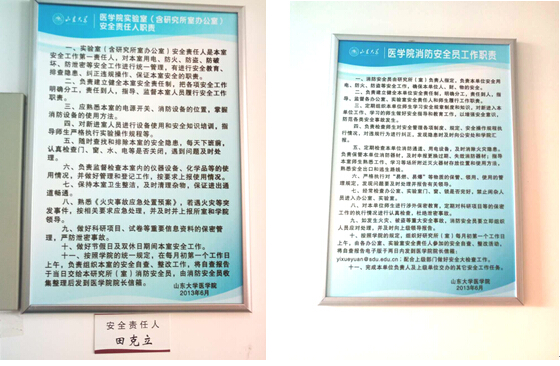

Safety is the most important thing throughout the whole project. We must ensure that all aspects of our scientific research are safe before we start. So we have a special instructor Dr. Xia Xu who is responsible for our security. Before we started our project, she gave safety training to all the team members to ensure that all our players understand safety knowledge, safety system and safe rules of the lab very well. In the following statement, we will describe the safety from 5 aspects: lab safety, researcher safety, environment safety, real product safety, and local safety.
We share a lab with some graduate students in Shandong University. This lab belongs to the level 1 biosafety, according to the WHO Laboratory Biosafety Manual. No pathogenic organisms are used in our program. There is nothing potentially harmful to researchers if we take general precautionary measures for alive E.coli. which are tightly controlled within the lab.
The lab is also equipped with fire hydrant, fire extinguisher and fire blanket to make sure the fire could be exstinguished in case of fire. Our instructor taught everyone how to use these extinguishing equipments. We also studied the using method of alcohol lamp and the matters needing attention. Laboratory safety rules and regulations and are hung on the wall, as well as storage and usage of hazardous reagents. All thises measures could guarantee the safety of the laboratory.
We seldom use the hazardous chemicals and solutions in the experiments. We don't use Ethidium Bromide for nucleic acid stain in gel electrophoresis, instead, we use SYBR GREEN I to stain DNA. Nevertheless, some harmful solutions, such as trizol and chloroform are till used in the total RNA extraction from plasm of AD. These solutions are treated with care and caution, and they are used in fume cupboard all the time. All team members were trained well by instructor Dr. Xia Xu for safety in all aspects before we started our project, including safety rules, safety facility and how to deal with the emergency. For example, we learned how to use the eyewash and emergency shower. Besides, we have some capable advisors who work in the same lab with us, to guide us as well. They can timely correct when we do any improper thing. And we have prepared 70% alcohol, iodine and cotton swab for in case.
We always follow safety rules set by our lab instructor while we are working with E. coli (DH5alpha). For example, we wear gloves and lab coats during experiments, wash hands with soap after experiments, perform experiments under the instructor’s supervision in the first period of the project. We do’t eat or drink in the lab, and we learned how to dispose bacterial liquid waste safely, how to dispose used glass tubes, eppendorf tubes and bacterial waste plates. We disinfect the lab benches with ethanol before and after experiments, etc.
E. coli strain that is used in the experiment has very limited ability of survival outside the lab. Nevertheless, we wtill use “84” disinfectant or autoclaving to dispose bacteria waste. Therefore, they are highly unlikely to survive or disseminate, and no specific environmental risk is associated with the E. coli. Besides that, we also have the trash disposal regulations, and we are required to sort waste into the correct bins. Some special workers come to take away these trash for disposal every Wednesday and Friday.
If our project were fully developed into a diagnosis kit, the potential risk involved is to release bacteria by accident into the environment. This problem will be addressed by introducing a biosafety instruction book although the bacteria are hardly to live in the environment. Moreover, in the future, we envision that the plasmid contained in bacteria and some enzymes would be extracted and put on the a special test paper, instead of coming in contact with bacteria. This would ensure our real product is very safe.
Our lab belongs to Shandong University. There is a Laboratory safety management network of Shandong University (http://202.194.14.199:81/sdusafenet/default.site), we can find all the Biosafety informations and rules and regulations on it. There is still a department of assets and laboratory management in Shandong University which is repossible for the supervision and regulation (http://sysg.sdu.edu.cn/list.aspx?DepID=8). In China, we also have the Chinese center for disease control and prevention (http://www.chinacdc.cn/jkzt/swaq/jdjc/) and China Biosafety information web (http://www.biosafety.com.cn/), both of which guide and make sure our security
It is more effective for iGEM headquarter to set up a biosafety group, committee, or review board. In the season of competition, the group/committee or review board are resposible for supervison and check the biosafety of all the register teams. And in the other time, they can disseminate how the Synthetic Biology keep the human and environment safe, spread public awareness on biosafety, or explain some biosafety issues to the public. These measures would be an effective way to make sure the Synthetic Biololgy and iGEM developed healthily and safely.